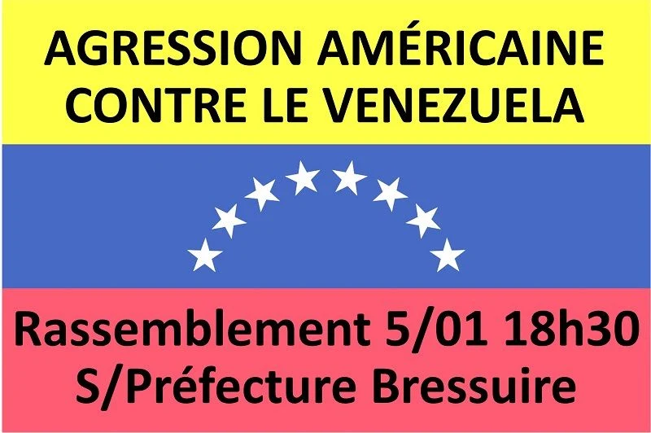

Annonce relayée
À Bressuire, un appel à se rassembler en solidarité avec le Venezuela
Date indiquée par Facebook · 5 janvier 2026
Repères éditoriaux
À Bressuire, l’affiche donnait rendez-vous le 5 janvier à 18 h 30 devant la sous-préfecture pour un rassemblement contre l’intervention américaine au Venezuela.
Texte conservé avec la publication
#venezuela #bressuire

Sources
Archive rouge · export Facebook · AR-0002-FB-00916
À lire aussi · À Niort, nous nous sommes rassemblés le 5 janvier en solidarité avec le Venezuela